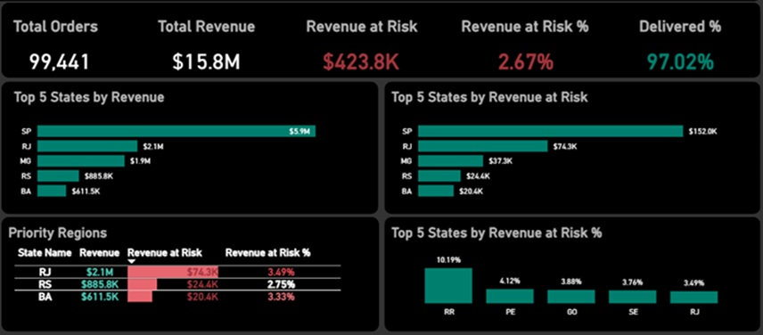

Order Fulfilment and Revenue Risk Analysis
SQL Power BI DAX
Analyzed e-commerce order fulfilment performance to identify revenue at risk, uncover delivery bottlenecks, and support operational improvements.
VIEW PROJECT